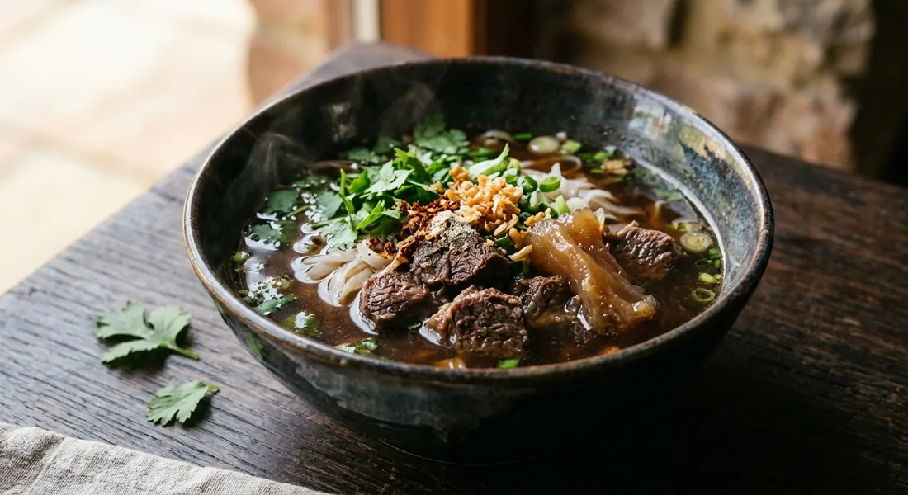

Thai stewed beef noodle soup — beef braised with Chinese spices and Thai aromatics until it melts, in a dark, clean broth over rice noodles, finished with fried garlic and herbs.

ก๋วยเตี๋ยวเนื้อตุ๋น
Kuay dtiao neua dtoon is the stewed-beef bowl of the Thai noodle shop: beef braised with Chinese spices until it nearly melts, in a dark, clean broth, over rice noodles with fried garlic on top. It is the patient sibling of boat noodles — no blood, no chilli base, just beef, spice and time.
The dish is a Chinese-Thai braise that runs on one rule: the broth must be clean. Everything else — the spice list, the timing, the aromatics — varies shop to shop.
| Thai | English | Amount |
|---|---|---|
| เนื้อพื้นท้อง / น่องลาย | Beef brisket or shank | 1.5-2 kg |
| เอ็นวัว | Beef tendon, optional, for the en dtoon bowls | 500g |
| Thai | English | Amount |
|---|---|---|
| อบเชย | Cinnamon, dry-toasted | 2-3 sticks |
| โป๊ยกั๊ก | Star anise, dry-toasted | 3-6 flowers |
| พริกไทยดำ | Black pepper, crushed | 1 tbsp |
| หญ้ามังกร | Licorice root, the herbal school | 50-100g |
| เม็ดผักชี | Coriander seed, optional | 1 tsp |
| Thai | English | Amount |
|---|---|---|
| กระเทียม | Garlic, bruised or pounded | 2 heads |
| รากผักชี | Coriander root | 4-6 |
| รากขึ้นฉ่าย | Chinese celery root, optional | 6-7 |
| ใบเตย | Pandan leaf, optional | a few |
| Thai | English | Amount |
|---|---|---|
| ซีอิ๊วดำ | Dark soy sauce | 1-2 tbsp |
| ซีอิ๊วขาว | Light soy sauce | 2-3 tbsp |
| น้ำตาลกรวด | Rock sugar | 1-2 tbsp |
| เกลือ | Salt | 1 tbsp |
| น้ำเปล่า | Water | 2.5-3 litres |
| Thai | English | Amount |
|---|---|---|
| เส้นเล็ก | Rice noodles | per bowl |
| ถั่วงอก | Bean sprouts | blanched |
| ผักบุ้งลวก | Morning glory | optional |
| กระเทียมเจียว | Fried garlic | generous |
| ต้นหอม ผักชี | Spring onion and coriander | to finish |
| พริกน้ำส้ม | Chilli vinegar | to serve |
The spices are toasted before they swim. Cinnamon, star anise and black pepper go into a dry pan until fragrant, then into a muslin bundle with licorice root, coriander seed and garlic, so nothing scatters in the pot. This toasting step is named in several sources as the difference between a fragrant broth and a flat one.
Two staging schools exist. The Kapook recipe simmers the beef with Thai aromatics first — galangal, lemongrass, kaffir lime — before the Chinese spices join, and sweetens the pot with dried longan. The herbal school goes fully Chinese: licorice root, pandan leaf, Sichuan pepper, the works, boiled briefly then left in an insulated pot for six to eight hours. The Ratchawat classic is the middle way — dark soy, five-spice, licorice root, six hours on the hob, then the cooked beef is chilled and sliced and simmered half an hour more until the collagen renders and the broth turns slightly sticky.
The skim is non-negotiable. Every source repeats it: fat and scum come off the surface throughout, or the broth clouds. The Ratchawat recipe describes the scum rising with the boil, settling, and the fat being skimmed as it appears.
Brisket or shank is the cut — the plate, the shin, the cheek, whatever holds collagen. Tendon goes into the pot from the start for the en dtoon bowls. And the chill-before-slicing trick appears in the shop recipes: the cooked beef goes cold so it cuts into clean slices instead of shredding, then returns to the spiced broth for the final render.
The quick school skips the stew entirely: tender sirloin slices cooked in a stock infused with the same spices for half an hour. It is a different bowl — lighter, faster — and the sources that publish it say so.
Rice noodles, blanched bean sprouts, greens, the beef and tendon, the hot broth, fried garlic, spring onion and coriander. Chilli vinegar, fish sauce, sugar and chilli flakes sit on the table for each diner to season. The same pot serves kao lao — the no-noodle version — and the pork stew (moo dtoon) uses the same spice broth with shoulder instead of beef.
This recipe is translated from the following Thai-language sources. Where they disagree, we've said so.
1. Kapook Cooking — ก๋วยเตี๋ยวเนื้อตุ๋น (สล่าปู่) — https://cooking.kapook.com/view143226.html
2. ครัวบ้านพิม — ก๋วยเตี๋ยวเนื้อตุ๋น (ออสเตรเลีย) — https://www.pim.in.th/one-dish-food/1417-aussie-beef-noodles
3. Bloggang — ก๋วยเตี๋ยวเอ็นตุ๋นน้ำใส — https://www.bloggang.com/m/viewdiary.php?id=narellan&month=07-2013&date=16&group=28&gblog=25
4. Wongnai — เกาเหลาเนื้อตุ๋น — https://www.wongnai.com/recipes/ugc/2e1fc7d744b4413eb32b87867fdba6ae
5. Wongnai — เนื้อตุ๋นราชวัตร — https://www.wongnai.com/recipes/ugc/c8e255595a344a41afb03a074ee01d1f
6. TrueID — ก๋วยเตี๋ยวเนื้อตุ๋น — https://food.trueid.net/detail/6pnNg9JmbVqp
7. TrueID — เนื้อตุ๋นยาจีน ทำก๋วยเตี๋ยวเนื้อ — https://food.trueid.net/detail/BqxA54adzdv2
8. Starup Foods — ก๋วยเตี๋ยวเนื้อ — https://starupfoods.com/blog/%E0%B8%81%E0%B9%8B%E0%B8%A7%E0%B8%A2%E0%B9%80%E0%B8%95%E0%B8%B5%E0%B9%8B%E0%B8%A2%E0%B8%A7%E0%B9%80%E0%B8%99%E0%B8%B7%E0%B9%89%E0%B8%AD/